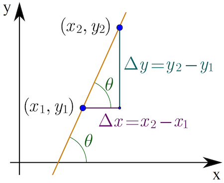

Rates of Change and Differentiation#
Definition#
A question that often crops up in mathematics and science is, how do we find the rate at which a quantity changes? Let’s start by considering the simplest case of a function, a straight line, which follows the equation \(y = mx + c\):

As we see, the rate of change, known as the Gradient, \(m\), is found from the ratio of the changes in the \(y\) and \(x\) directions:
But what about for a curve? Clearly, the gradient of this curve varies from point to point:

We can start at a point \(x\) and find the gradient of the Tangent to the curve; however, we could also overshoot the curve and draw a line connecting the curve with a neighboring point \(x+h\) (known as a Secant line). By drawing more secant lines for smaller choices of \(h\), we can gradually build up a value for the gradient at the point:
We can do this mathematically, for the function \(y = f(x)\), by taking the limit for decreasing \(h\), which we denote by a change \(\Delta x\):
We call this the Derivative of the function, and the process of finding the derivative is known as Differentiation. The quantities \(\textrm{d}y\) and \(\textrm{d}x\) are known as Infinitesimals and represent changes of a variable, say \(x\), in the limit of \(\Delta x \rightarrow 0\). Sometimes, if we are just using \(f(x)\) to describe a function, we use the notation \(f'(x)\) for the derivative. We should note that the derivative is properly called a Mathematical Operator, which means we have to be careful how it is used. Technically speaking, we are finding \(\frac{\textrm{d}}{\textrm{d}x}\bigg(y\bigg)\), and for the choice of a function, such as \(y = x^2 + 2x + 1\), we could write:
The limit definition allows us to find the derivatives for different types of functions.
An example: find the derivative of \(y = x^2\):
For polynomials in general, using the binomial theorem, for \(y = x^n\):
where \(\mathcal{O}(\Delta x)\) is mathematical notation for terms of order \(\Delta x\).
Differentiating Polynomial Functions#
Using the limit definition, we can find the derivative for a range of different functions. We recall that for polynomials:
where \(a\) is a constant, and this follows from the limit definition and binomial theorem. For the case of a constant:
which makes sense since if the function is constant, the gradient is zero, hence zero derivative. We should notice that for the same function with a shift, we see the gradient will be the same:

Differentiating Functions#
We can use the limit definition to differentiate different types of functions:
Trigonometric Functions#
Derivative of Sine:
The derivative of \(\sin(x)\) is \(\cos(x)\).
This is because the slope of the sine curve at any point \(x\) is given by the value of \(\cos(x)\) at that point.
Derivative of Cosine:
The derivative of \(\cos(x)\) is \(-\sin(x)\).
The negative sign appears because the cosine curve decreases where sine increases, and vice versa.
Higher Derivatives:
Differentiating \(\sin(x)\) twice returns it as \(-\sin(x)\):
Similarly, differentiating \(\cos(x)\) twice returns it as \(-\cos(x)\):
This cyclical pattern in higher derivatives of sine and cosine is often useful in applications like oscillations and wave equations.
Below is a graph showing the sine function \( y = \sin(x) \) and its derivative \( y' = \cos(x) \).
Below is a graph showing the cosine function \( y = \cos(x) \) and its derivative \( y' = -\sin(x) \).
Exponential Functions#
Derivative of the Natural Exponential Function:
The exponential function \( e^x \) is unique because it is its own derivative.
This means that the rate of change of \( e^x \) at any point \( x \) is exactly the value of \( e^x \) at that point.
Derivative of \( a^x \) (Exponential Function with Base \( a \)):
To find the derivative of an exponential function with base \( a \), such as \( y = a^x \), we can use the definition of the exponential function in terms of \( e \) and apply the chain rule.
Step 1: Express \( a^x \) in Terms of \( e \) Any exponential function \( a^x \) can be rewritten in terms of the natural exponential function \( e^x \) by noting that:
This is because \( e^{x \ln(a)} \) represents “raising \( e \)“ to a power that is equivalent to \( a^x \). Here, \( \ln(a) \) is the natural logarithm of \( a \).
Step 2: Differentiate Using the Chain Rule Now, to differentiate \( y = a^x = e^{x \ln(a)} \) with respect to \( x \), we can use the chain rule:
Using the chain rule, we differentiate the outer function \( e^{x \ln(a)} \), treating \( x \ln(a) \) as the inner function:
Now, differentiate the inner function \( x \ln(a) \):
Step 3: Substitute Back for \( e^{x \ln(a)} \) Since \( e^{x \ln(a)} = a^x \), we can substitute back:
Thus, the derivative of \( a^x \) is:
The term \( \ln(a) \) acts as a scaling factor that depends on the base \( a \), meaning that each base \( a \) scales the exponential growth rate differently.
Example Calculation: For example, if \( y = 2^x \), then:
This tells us that \( 2^x \) grows faster than \( e^x \) by a factor of \( \ln(2) \), which is approximately \( 0.693 \).
Higher Derivatives:
The exponential function \( e^x \) has the special property that all higher derivatives are also \( e^x \):
Second Derivative of \( e^x \):
\[\frac{\mathrm{d}^2}{\mathrm{d}x^2} e^x = e^x\]
For other exponential functions \( a^x \):
Second Derivative of \( a^x \):
\[\frac{\mathrm{d}^2}{\mathrm{d}x^2} a^x = a^x (\ln(a))^2\]Each derivative introduces another factor of \( \ln(a) \).
Below is a graph showing \( y = e^x \) and its derivative \( y' = e^x \) on the left and a graph showing \( y = 2^x \) and its derivative \( y' = 2^x \ln(2) \) to the right.
Logarithmic Functions#
Derivative of \( \ln(x) \):
This derivative tells us that the rate of change of \( \ln(x) \) at any point \( x \) is inversely proportional to \( x \).
It is only defined for \( x > 0 \) because the natural logarithm \( \ln(x) \) is only defined for positive \( x \) values.
Derivative of Logarithms with Other Bases: For logarithms with bases other than \( e \), such as \( \log_a(x) \) where \( a \) is the base, we can use the change of base formula to rewrite it in terms of \( \ln(x) \):
Using this, we can derive the derivative as follows:
The factor \( \ln(a) \) appears in the denominator and scales the rate of change according to the base \( a \).
Higher Derivatives:
The higher derivatives of \( \ln(x) \) can be calculated by successive differentiation:
Second Derivative of \( \ln(x) \):
\[\frac{\mathrm{d}^2}{\mathrm{d}x^2} \ln(x) = -\frac{1}{x^2}\]This shows that the concavity of \( \ln(x) \) changes as \( x \) increases.
Below is a graph showing \( y = \ln(x) \) and its derivative \( y' = \frac{1}{x} \) on the left and a graph showing \( y = \log_2(x) \) and its derivative \( y' = \frac{1}{x \ln(2)} \) on the right.
Differentiation Rules#
There are three main differentiation rules:
Product Rule#
An example:
Quotient Rule#
An example:
Chain Rule#
An example:
Chain Rule with Sine and Cosine:
When differentiating compositions involving sine and cosine, use the chain rule:
Examples:
For \( y = \sin(3x) \):
\[y' = 3 \cos(3x)\]For \( y = \cos(5x^2) \):
\[y' = -10x \sin(5x^2)\]
Chain Rule with Exponential Functions:
When differentiating compositions involving exponential functions, use the chain rule:
Examples:
For \( y = e^{3x} \):
\[y' = 3 e^{3x}\]For \( y = 2^{5x^2} \):
\[y' = 10x \cdot 2^{5x^2} \ln(2)\]
Chain Rule with Logarithmic Functions:
When differentiating compositions involving logarithmic functions, use the chain rule:
Examples
For \( y = \ln(3x) \):
\[y' = \frac{1}{3x} \cdot 3 = \frac{1}{x}\]For \( y = \log_2(x^2 + 1) \):
\[y' = \frac{1}{(x^2 + 1) \ln(2)} \cdot 2x = \frac{2x}{(x^2 + 1) \ln(2)}\]
Implicit Differentiation#
Implicit differentiation is used when a function is given in an implicit form rather than an explicit form. In implicit functions, \( y \) is not isolated on one side of the equation, so we differentiate both \( x \) and \( y \) as we work through the equation.
Steps for Implicit Differentiation:
Differentiate both sides of the equation with respect to \( x \).
When differentiating terms involving \( y \), treat \( y \) as a function of \( x \) and apply the chain rule:
\[\frac{\mathrm{d}}{\mathrm{d}x} \, y = y' = \frac{\mathrm{d}y}{\mathrm{d}x}\]Solve for \( y' \) (or \( \frac{\mathrm{d}y}{\mathrm{d}x} \)).
Examples:
For the equation \( x^2 + y^2 = 25 \), differentiate both sides with respect to \( x \):
Solving for \( \frac{\mathrm{d}y}{\mathrm{d}x} \) (i.e., \( y' \)):
For the equation \( x^2y + y^2 = 4 \), differentiate both sides with respect to \( x \):
Differentiate Each Term:
Apply the Product Rule to \( x^2y \) and the Chain Rule to \( y^2 \):
Combine Terms and solve for \( \frac{\mathrm{d}y}{\mathrm{d}x} \):
For the equation \( \sin(xy) = x + y \), differentiate both sides with respect to \( x \):
Differentiate Both Sides:
Apply the Chain Rule on the left side and differentiate \( x + y \) on the right side:
Use the Product Rule for \( \frac{\mathrm{d}}{\mathrm{d}x} (xy) \):
Expand and Collect Terms for \( \frac{\mathrm{d}y}{\mathrm{d}x} \):
Move All Terms Involving \( \frac{\mathrm{d}y}{\mathrm{d}x} \) to One Side:
Factor Out \( \frac{\mathrm{d}y}{\mathrm{d}x} \) and Solve:
These examples demonstrate how implicit differentiation can handle complex relationships between \( x \) and \( y \), applying both the chain rule and product rule as needed.
Parametric Differentiation#
In parametric differentiation, functions are given in parametric form where both \( x \) and \( y \) are defined in terms of a third variable, usually \( t \), called the parameter.
Steps for Parametric Differentiation:
Differentiate \( x(t) \) and \( y(t) \) with respect to \( t \) to obtain \( \frac{\mathrm{d}x}{\mathrm{d}t} \) and \( \frac{\mathrm{d}y}{\mathrm{d}t} \).
Use the formula for \( \frac{\mathrm{d}y}{\mathrm{d}x} \):
\[\frac{\mathrm{d}y}{\mathrm{d}x} = \frac{\frac{\mathrm{d}y}{\mathrm{d}t}}{\frac{\mathrm{d}x}{\mathrm{d}t}}\]This gives the derivative of \( y \) with respect to \( x \) in terms of \( t \).
Examples:
For the parametric equations \( x = t^2 \) and \( y = t^3 - 3t \):
Differentiate \( x \) and \( y \) with respect to \( t \):
\[\frac{\mathrm{d}x}{\mathrm{d}t} = 2t, \quad \frac{\mathrm{d}y}{\mathrm{d}t} = 3t^2 - 3\]Use the formula for \( \frac{\mathrm{d}y}{\mathrm{d}x} \):
\[\frac{\mathrm{d}y}{\mathrm{d}x} = \frac{3t^2 - 3}{2t}\]
These methods allow us to differentiate functions that are not explicitly given as \( y = f(x) \), and they’re especially useful in fields like physics and engineering, where complex relationships between variables often occur.
Finding Stationary Points#
A stationary point of a function \( f(x) \) occurs where the derivative \( f'(x) = 0 \). At a stationary point, the function’s slope is zero, which means the graph has a horizontal tangent line.
To find stationary points:
Calculate the derivative \( f'(x) \).
Set \( f'(x) = 0 \) and solve for \( x \).
Substitute these \( x \)-values back into \( f(x) \) to find the corresponding \( y \)-values.
Maxima and Minima (Using the Second Derivative Test)#
Once you have identified the stationary points, you can use the second derivative \( f''(x) \) to determine if these points are local maxima or local minima:
Local Maximum: If \( f''(x) < 0 \) at a stationary point, \( f(x) \) has a local maximum at that point. The curve is concave down.
Local Minimum: If \( f''(x) > 0 \) at a stationary point, \( f(x) \) has a local minimum at that point. The curve is concave up.
Inconclusive: If \( f''(x) = 0 \), the second derivative test is inconclusive. In this case, higher-order derivatives might provide more information.
Examples:
For \( f(x) = x^3 - 3x^2 + 4 \):
Find \( f'(x) \) and set it to zero to locate stationary points.
Use \( f''(x) \) at those points to determine if they are maxima or minima.
Points of Inflection (Using the Third Derivative)#
A point of inflection occurs where the behaviour of \( f(x) \) changes from concave up to concave down or vice versa
To confirm a point of inflection:
Calculate \( f''(x) \) and if \(f''(x) = 0\) we have potential inflection points.
Use the third derivative test: \( f'''(x) \neq 0 \), then \( x \) is a point of inflection.
Example:
For \( f(x) = x^4 - 4x^2 \):
Find \( f''(x) \) and set it to zero to identify potential points of inflection.
Use \( f'''(x) \) at these points to determine if they are true inflection points.
Summary Table#
Feature |
Condition |
Test |
|---|---|---|
Stationary Point |
\( f'(x) = 0 \) |
Solve \( f'(x) = 0 \) |
Local Maximum |
\( f'(x) = 0 \) and \( f''(x) < 0 \) |
Second derivative test |
Local Minimum |
\( f'(x) = 0 \) and \( f''(x) > 0 \) |
Second derivative test |
Point of Inflection |
\( f''(x) = 0 \) and \( f'''(x) \neq 0 \) |
Third derivative test |
These steps provide a methodical approach to identifying and analysing key features of a function’s graph, which is essential for understanding its behaviour.
An application of differentiation is to find a function \(f(x)\)’s Stationary Points (SP’s), where we are searching for solutions to \(f'(x) = 0\). There are three distinct types of SP:
We see that we need the first derivative to be zero, but the sign of the second derivative can indicate the type of stationary point.
Example: find the coordinate(s) and nature of all the stationary point(s) for:
Firstly, find expressions for all the relevant derivatives:
Then find the \(x\) coordinates for the SP’s using \(f'(x) = 0\):
Finally, substitute in \(x\) values to find the \(y\) coordinates and so identify the type of SP:
Therefore \(f(x)\) has two SP’s, a minima at \((3, -54)\) and a maxima at \((-3, 54)\).